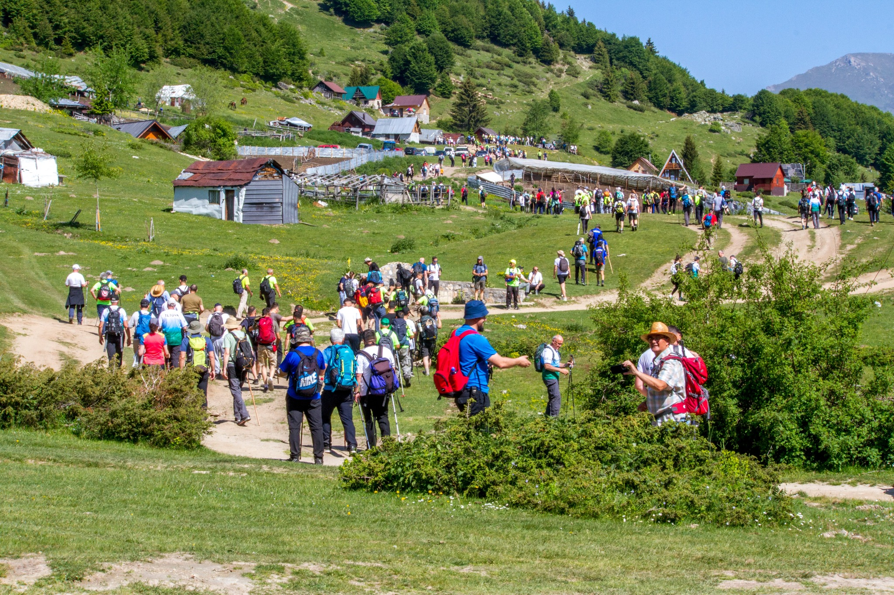
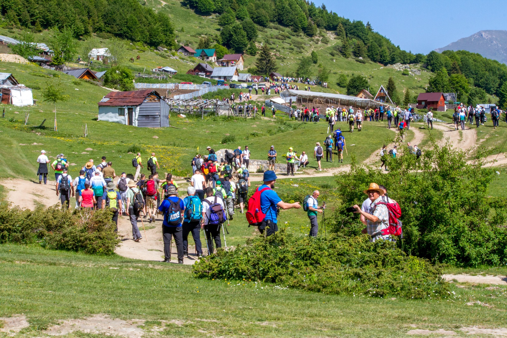

Our Mission
The Center for Sustainable Agriculture and Rural Development (CESARD) is dedicated to promoting sustainable agricultural practices, rural development, and community engagement for a greener, more sustainable future.
 

 SQ
SQ EN
ENThe Center for Sustainable Agriculture and Rural Development (CESARD) is dedicated to promoting sustainable agricultural practices, rural development, and community engagement for a greener, more sustainable future.